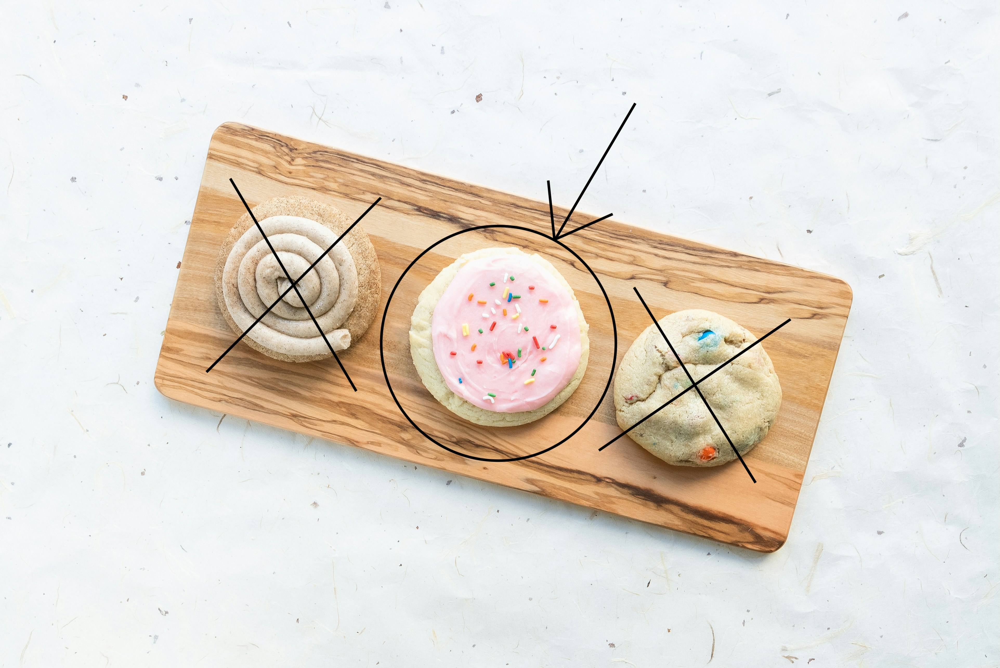

Lofthouse Cookies

Ingredients
- 2 1/4 cups all-purpose flour
- 1/2 teaspoon baking powder
- 1/4 teaspoon baking soda
- 1 tablespoon cornstarch
- 1/2 teaspoon salt
- 1/2 cup room-temperature unsalted butter
- 1 cup granulated sugar
- 1 room temperature egg
- 1/4 cup room temperature sour cream
- 1 1/2 teaspoon vanilla extract
- 1/4 teaspoon almond extract
For the Buttercream
- 1/2 cup room temperature butter
- 2 cups powdered sugar
- 1 teaspoon vanilla extract
- 2 tablespoons milk
- Food colouring optional
- Sprinkles optional
Steps
- Combine the flour, salt, baking powder, baking soda, and cornstarch in a bowl then whisk together and set aside.
- Cream the butter and sugar until fluffy then beat in the egg, vanilla, and almond extract if using. Add the sour cream and mix until combined, scraping the bowl down as needed.
- Add the dry mixture to the wet and mix on low until just combined. Use your spatula to scrape down the bowl and combine any errant flour. Shape dough into a disk then cover in plastic and chill for an hour.
- Preheat oven to 375F. Roll the dough out to ¼ inch then use a 2 1/2-3 inch circular cookie cutter to cut the cookies, Reroll the scraps and cut the remaining cookies. Transfer cookies to parchment-lined baking sheets and bake at 375F for 8-9 minutes or until the cookies are just turning color on the bottom edge. Set aside to cool completely.
- While the Cookies bake, cream the butter then mix in the powdered sugar, and vanilla. Drizzle in the milk while mixing on low then increase speed to high and beat until smooth. If using food dye, mix in a drop at a time until desired color is reached.
- Top the cookies with a thin layer of buttercream and a smattering of sprinkles.
Notes
- The cornstarch is essential for soft cookies so don't skip it.
- Make sure to chill the cookie dough for at least 1 hour or it'll be too sticky to roll out.
- The dough will seem thick but it will come together with a few pats.
- I used a 2 1/2 to 3 inch round cookie cutter, if yours is bigger or smaller is doesn't matter it'll just affect the total amount of cookies baked.
- Make sure your baking powder and soda haven't expired or it won't give the cookies a fluffy texture.
- Make sure your refrigerated ingredients are at room temperature (especially the butter and egg) for best results and soft texture.
- Use vanilla extract and not essence for best results.
- Almond extract replaces synthetic flavor used in the real Lofthouse cookies. If you have a nut allergy you can leave it out.
- Make sure you don't over-bake these cookies or the texture won't be the same. These cookies don't brown they should be a nice pale color.
- I recommend using gel food coloring because you don't need much to get a nice bright color.
- Storage - bake and frosted cookies will keep well in a sealed container in the fridge for up to 1 week or can be frozen for up to 3 months.
Back to Home